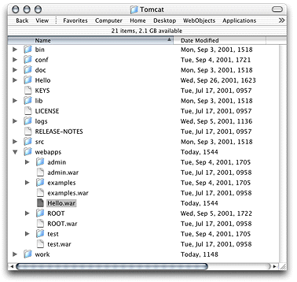

| PATH |

Follow these steps to create a new project with servlet support.
Select WebObjects Application from the list of project types, and click Next.
You can deploy as a servlet other types of WebObjects applications, such as Direct to Java Client, Direct to Web, Display Group, and Java Client.
Name the project Hello, select a location for it, and click Next.
Selecting "Copy
all JARs inside the JSP/Servlet WEB-INF directory" tells Project Builder
to copy framework and application JAR files to the WEB-INF/lib directory (necessary
only when the servlet uses other servlets, or for JSPs that make
use of actual objects).
When Project Builder is finished creating the project, you'll see a window similar to the one in Figure 2-1.
Figure 2-1 New WebObjects Application project with servlet-support
The newly created project is, in all respects, a standard WebObjects Application project. However, Project Builder adds the Servlet Resources folder to the Resources group. Anything you add to this folder is included in the WAR file that Project Builder creates when you build the project, following the same directory structure (the Servlet Resources folder is a real directory in the project's root directory).
The WEB-INF folder, under Server Resources, contains the web.xml.template file,
which Project Builder uses to generate the servlet's deployment
descriptor. You can edit this template to customize the deployment
descriptor for your deployment environment. There are several elements
whose values are surrounded by percent (%) characters (these are
placeholders that Project Builder evaluates when you build the project).
These elements include cross-platform settings (see "Cross-Platform Deployment" for
details). You can replace the placeholders with other values if
your environment requires it.
Project Builder also adds a couple of build settings to JSP/Servlet projects, as shown in Figure 2-2.
Figure 2-2 Build settings for a servlet project
The SERVLET_COPY_JARS build
setting tells Project Builder whether to copy framework and application
JAR files to the WEB-INF/lib directory
(necessary only when the servlet uses other servlets, or for JSPs
that make use of actual objects).
You can tell Project Builder where to put the WAR file by
setting the value of the SERVLET_WEBAPPS_DIR build
setting (this is especially convenient during development). By default,
WAR files are places in the build directory
of your project.
Project Builder WO (on Windows) adds two buckets to your project:
JSP Servlet WEB-INF and JSP Servlet Resources. The JSP Servlet WEB-INF
bucket is a holding place for JARs, classes, and TLDs (which are
auto-routed to the correct subdirectories in the WEB-INF directory
of the generated WAR file, lib, class,
and tld respectively;
the web.xml.template file
is also located here). The JSP Servlet Resources bucket contains
any other items you want to add to the WAR file (you can drag files
and folders into this bucket; Project Builder WO preserves the directory
structure when it generates the WAR file). These items are not auto-routed.
There are also several new variables defined in Makefile.preamble .
The SERVLET_APP_MODE variable
indicates whether Web-server resources are loaded from the WOA bundle
(the default) or the servlet container (by setting it to "Deployment".
The SERVLET_WEBAPPS_DIR and SERVLET_COPY_JARS variables
perform the same function described for Project Builder's servlet-related
build settings above.
This is how you set up the SERVLET_WEBAPPS_DIR variable
in Project Builder WO:
export SERVLET_WEBAPPS_DIR = C:\Tomcat\webapps
You can test the servlet by setting the SERVLET_WEBAPPS_DIR build
setting to the path of your servlet container's application deployment
directory and building the project. Before you build, you can edit Main.wo using
WebObjects Builder to add a message to the page, such as "Hello.
I'm a servlet." When Project Builder finishes
building the application, it places the Hello.war file
in your servlet container's application deployment directory. Figure 2-3 shows
the deployment directory of a servlet deployed within Tomcat.
Figure 2-3 Tomcat's application-deployment directory
After restarting Tomcat you'll be able to view your application's output by connecting to it through your servlet container. By default, the connection URL is
http://host:port/AppName/WebObjects/AppName.woa
where host and port are
defined by the servlet container. Table 2-1 lists the default host and
port for Tomcat and WebLogic.
| Host | Port | |
| Tomcat | localhost |
8080 |
| WebLogic | localhost |
7001 |